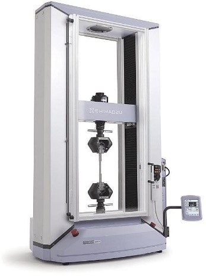

Los grandes avances de la humanidad han sido posibles gracias a un material o a un conjunto de ellos. Como ejemplo, se pueden mencionar algunos de los avances más espectaculares en el siglo XX: los transistores, el rayo láser o la fibra óptica. La historia de la humanidad ha sido dividida en diferentes épocas que están relacionadas con el material que más se usaba (edad de piedra, edad de bronce, edad de cobre etc.).
La utilización exitosa de los materiales en ciertas aplicaciones requiere que su desempeño en condiciones de servicio cumpla con los requisitos para los cuales fueron creados. Estos requisitos son sus propiedades, en las que se encuentran las térmicas, ópticas, mecánicas, físicas, químicas y nucleares, y están íntimamente relacionadas a la estructura molecular del material. En este tema hablaremos del las fuerzas que pueden experimentar los materiales.
Los ensayos mecánicos de tensión o tracción son ensayos estandarizados en los que una muestra se somete a una fuerza uniaxial en una máquina universal (figura 1) controlando la fuerza o el desplazamiento. Las probetas para ensayos de tracción deben ser de forma cilíndrica o prismática, con extremos ensanchados, tanto para facilitar su sujeción a la máquina de ensayo, como para asegurar su rotación dentro del área de menor sección.
Figura 1. Máquina de pruebas universales para ensayos Mecánicos
Considérese un espécimen que va hacer sometido a una prueba de tensión; dicho espécimen o probeta, puede tener una geometría plana o cilíndrica. Estas probetas están elaboradas de acuerdo a normas o estándares en los cuales se específica el tipo de geometría que deben tener para ser usados de manera experimental. Estos especímenes tienen una forma de hombro más largos de donde se sostienen, mientras que la sección media o sección transversal es más pequeña, de modo que la deformación y la falla pudieran ocurrir en esta parte; en esta sección es donde se esperan que ocurran los mayores valores de esfuerzos. Observe el siguiente video para entender el concepto de carga o fuerza de tensión.
El comportamiento de los materiales usados en aplicaciones ingenieriles bajo tensión o compresión en un puente o en un edificio se pueden predecir si se han determinado las propiedades mecánicas de cada uno de los elementos que lo forman. Existen muchas formas de evaluar las propiedades mecánicas de los materiales: la dureza, ensayos de tensión, compresión, torsión, etc. De estos ensayos unos son más aplicados en la industria que otros. Desde otro punto de vista, un tipo de ensayo puede representar mejor que otro el comportamiento del material, según sea la forma en que el material se desempeña en la aplicación ingenieril de que se trate. En otros casos se prefiere un ensayo a otro por la forma de la probeta, ya que en algunos casos es más simple o más fácil de fabricar, en otros casos el equipo de medición es más sencillo de utilizar o es más barato.
En general, se espera que cualquier ensayo mecánico debe dar más o menos la misma información que los otros, es decir debe medir el comportamiento mecánico del material. En el caso de aplicaciones estructurales se prefiere el ensayo de tensión.